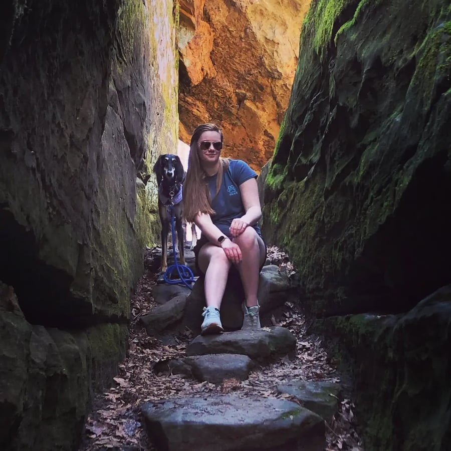

Contributer Bios
For more on the Contributor's works regarding A Children's Bible, visit the Essay page.

Cristina Borunda
Cristina Borunda was born in Chihuahua, Mexico. She has lived in Mexico for most of her life but also spent some years living in El Paso, Texas. She is currently a sophomore at Millikin University where she is part of the tennis team. She is working towards a double major in English Writing and Psychology. Her English major has a concentration in Journalism. Cristina plans on going to law school after college to be a humans rights lawyer.

Jolie Henschen
Jolie Henschen is a sophomore Secondary English Education major at Millikin University. She is a part of the Englsih Club and hopes eventually to join more student organizations in her remaining years at Millikin. She spends her free time reading, writing, watching an unhealthy amount of Netflix, and hanging out with family.

Carin Houser
Carin Houser is a Secondary English Education major at Millikin University. She is also an editor and writer for our student-run newspaper, The Decaturian. She is particularly proud of her recent articles on financial struggles at Millikin, on the troop with drawals in Afghanistan, and on the circumstances surrounding a campus residence hall in quarantine. Carin is also an intern for the Illinois Medieval Association, a research-based association in the state of Illinois. Carin can be seen with her service dog Ata across campus and throughout the central Illinois community. After graduation in 2024, the duo plans to enter the teaching profession.

Hannah Lilly
Hannah Lilly is a sophomore at Millikin university pursuing a Bachelor of Science in social psychology. After her time at Millikin she will attend graduate school for forensic psychology and law school. She strives to work herself all the way to the FBI, becoming a forensic psychologist for the federal government. She is fascinated with literature of all types, specifically historical fiction and crime novels. Her favorite historical novel is The Help by Kathryn Stockett.

Cadence Lopez
Cadence Lopez is from Lake of the Ozarks Missouri. She is a Human Services major with a Dance minor. She is currently a freshman at Millikin University. Outside of class, Cadence is a part of the Sapphires Dance team, Millikin Treble Choir, and Big Blue Buddies.

Angela Millette
Angela Millette is a freshman this year at Millikin University. She is an English Literature major and enjoys writing poetry, essays, and more. Angela is from a small rural town in southern Minnesota and graduated in 2021. She was in the newspaper in high school and found her love for writing her junior year. She loves to drive, coach, and play piano or ukulele in her free time.
Claire Reynolds
Claire Reynolds is an English literature major from Macon, Illinois. She is proud to call herself a James Millikin Scholar and is grateful to have the opportunity to study at Millikin University. When not at school, Claire gives her time to her community, volunteering at her local community center in the winter and directing a day camp program for children in the summer. She enjoys watching horror movies and making collages. She would prefer not to provide any additional information, so as not to compromise her air of mystique.

Destiny Schlesinger
Destiny Schlesinger is a sophomore Secondary English Education major who is also pursuing a Special Education endorsement at Millikin University. She is a part of the CARE Club and works as a waitress while at school. She enjoys being outside when at all possible. In her free time, Destiny loves to read and spend time with her friends and dog, Jax.

Dr. Tony R. Magagna
Dr. Tony R. Magagna is an Associate Professor and Chair of the English Department at Millikin University, specializing in modern and contemporary American literature. In addition to EN202: Writing About Literature, Dr. Magagna teaches a variety of literature courses, including classes on the modern American novel, contemporary American regionalism, modern American drama, and American popular culture. He has twice served as a Fulbright Lecturer in American Studies, both in Germany (2012-2013) and Japan (2018-2019). Over the last few years, Dr. Magagna has added a new dimension to his career, developing research and curricula focused on the intersections of interactive media and literature. You can find the website for his Digital Literatures course here.